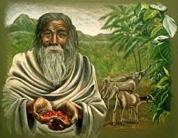

Origen
El café, entendido como infusión, tiene su origen en el continente africano, específicamente en la región de Etiopía. Allí crece de manera natural la planta Coffea arabica, considerada la variedad más antigua y difundida del café. Aunque en un principio los granos no se consumían como bebida, existen relatos que indican que las comunidades locales ya conocían sus efectos estimulantes.

Según la tradición más difundida, el descubrimiento del café se atribuye a un pastor etíope llamado Kaldi, quien observó que sus cabras mostraban un comportamiento inusualmente activo tras consumir los frutos de un arbusto silvestre. Al compartir esta experiencia con monjes de la región, estos comenzaron a experimentar con los granos y descubrieron que, al hervirlos en agua, obtenían una bebida que ayudaba a mantenerse despiertos durante las largas jornadas de oración. Más allá del carácter legendario del relato, este episodio refleja el conocimiento temprano de las propiedades del café.
Posteriormente, el café se trasladó desde Etiopía hacia la península arábiga, en especial a Yemen, donde se consolidó su consumo como infusión. Allí se desarrolló el proceso de tostado y molienda de los granos, dando origen a una preparación más similar a la que se conoce en la actualidad. En los monasterios sufíes, el café se utilizó como apoyo para las prácticas religiosas nocturnas, lo que favoreció su difusión y aceptación cultural.
Desde Yemen, el café se expandió rápidamente por el mundo islámico y luego por el Imperio Otomano, donde surgieron las primeras cafeterías como espacios de encuentro social y debate. A partir del siglo XVII, la bebida llegó a Europa y, con el tiempo, a América, transformándose en un producto de consumo global.
En conclusión, el café como infusión tiene un origen africano, pero fue en el mundo árabe donde se perfeccionó su preparación y se consolidó su consumo. A lo largo de los siglos, esta bebida pasó de ser un recurso ritual y religioso a convertirse en una de las infusiones más consumidas y culturalmente significativas del mundo.
Mayor consumidor de café
El país que más café consume en el mundo, cuando el análisis se realiza en función del volumen total, es Estados Unidos. Este criterio considera la cantidad absoluta de café consumida anualmente dentro de un país, sin relacionarla con el número de habitantes. Por esta razón, los países con grandes poblaciones y mercados amplios suelen ocupar los primeros lugares en este tipo de medición.


Estados Unidos encabeza el consumo mundial de café debido a la fuerte presencia de esta bebida en la vida cotidiana de su población. El café forma parte de las rutinas diarias de millones de personas, tanto en el ámbito laboral como en el social, y su consumo está ampliamente extendido a través de cafeterías, restaurantes y el consumo doméstico. Esta combinación de hábitos culturales y un elevado número de habitantes explica el enorme volumen total de café que se consume anualmente en el país.
Además, el desarrollo de una industria cafetera sólida, con grandes cadenas de cafeterías y una amplia oferta de productos derivados del café, ha contribuido a consolidar su consumo masivo. A diferencia de otros países donde el café puede asociarse a momentos específicos del día, en Estados Unidos su consumo se distribuye a lo largo de toda la jornada, lo que incrementa notablemente la cantidad total ingerida.
Otros países como Alemania, Japón, Francia e Italia también presentan altos niveles de consumo total, pero se ubican por debajo de Estados Unidos. En estos casos, aunque existe una fuerte tradición cafetera, el menor tamaño de la población limita el volumen absoluto de café consumido en comparación con el mercado estadounidense.
En conclusión, al medir el consumo de café por volumen total, Estados Unidos se posiciona como el mayor consumidor del mundo. Este liderazgo se explica principalmente por la combinación de una gran población, una cultura ampliamente arraigada en torno al café y un mercado interno altamente desarrollado, factores que lo distinguen claramente del resto de los países.
Mayor exportador
El mayor exportador de café del mundo es Brasil, posición que mantiene de forma sostenida desde el siglo XIX. Su liderazgo en el mercado internacional del café se debe a una combinación de factores geográficos, históricos, económicos y tecnológicos que le han permitido producir y exportar grandes volúmenes de este producto de manera constante.
Brasil cuenta con extensas áreas de clima tropical y subtropical, condiciones ideales para el cultivo del café. Regiones como Minas Gerais, São Paulo y Espírito Santo concentran una gran parte de la producción nacional. Estas zonas permiten cosechas a gran escala, lo que diferencia a Brasil de otros países productores que dependen más de cultivos pequeños o artesanales.
Desde el punto de vista histórico, el café fue uno de los pilares del desarrollo económico brasileño durante el siglo XIX y comienzos del XX. A partir de ese período, el país invirtió fuertemente en infraestructura agrícola, transporte y comercio exterior, lo que consolidó una industria cafetera orientada principalmente a la exportación. Con el tiempo, esta estructura se modernizó y adoptó tecnologías que aumentaron el rendimiento y la eficiencia productiva.
En la actualidad, Brasil exporta café a prácticamente todos los continentes y abastece a mercados clave como Estados Unidos, Europa y Asia. Además, produce tanto café arábica como robusta, lo que le permite adaptarse a distintas demandas del mercado internacional y mantener una posición dominante frente a otros países exportadores.
En conclusión, Brasil es el mayor exportador de café del mundo gracias a sus condiciones naturales favorables, su larga tradición cafetera y una industria altamente desarrollada. Estos factores han convertido al país en un actor central del comercio mundial del café y en una referencia inevitable al analizar la producción y exportación de esta infusión a nivel global.